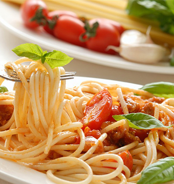

合作单位
中文
|
English
首页
美食分类
美食介绍
关于美食
登录
注册
<
>
中国饮食文化直接影响到朝鲜、韩国、泰国、新加坡、日本、蒙古等国家，是东方饮食文化圈的中心。与此同时，它还间接影响到欧洲、美洲、非洲和大洋洲，像中国的素食文化、茶文化、酱醋、面食、药膳、陶瓷餐具和大豆等，惠及全世界数十亿人。
中国饮食文化直接影响到朝鲜、韩国、泰国、新加坡、日本、蒙古等国家，是东方饮食文化圈的中心。与此同时，它还间接影响到欧洲、美洲、非洲和大洋洲，像中国的素食文化、茶文化、酱醋、面食、药膳、陶瓷餐具和大豆等，惠及全世界数十亿人。

中国饮食文化直接影响到朝鲜、韩国、泰国、新加坡、日本、蒙古等国家，是东方饮食文化圈的中心。与此同时，它还间接影响到欧洲、美洲、非洲和大洋洲，像中国的素食文化、茶文化、酱醋、面食、药膳、陶瓷餐具和大豆等，惠及全世界数十亿人。
中国饮食文化直接影响到朝鲜、韩国、泰国、新加坡、日本、蒙古等国家，是东方饮食文化圈的中心。与此同时，它还间接影响到欧洲、美洲、非洲和大洋洲，像中国的素食文化、茶文化、酱醋、面食、药膳、陶瓷餐具和大豆等，惠及全世界数十亿人。
中国饮食文化直接影响到朝鲜、韩国、泰国、新加坡、日本、蒙古等国家，是东方饮食文化圈的中心。与此同时，它还间接影响到欧洲、美洲、非洲和大洋洲，像中国的素食文化、茶文化、酱醋、面食、药膳、陶瓷餐具和大豆等，惠及全世界数十亿人。
中国饮食文化直接影响到朝鲜、韩国、泰国、新加坡、日本、蒙古等国家，是东方饮食文化圈的中心。与此同时，它还间接影响到欧洲、美洲、非洲和大洋洲，像中国的素食文化、茶文化、酱醋、面食、药膳、陶瓷餐具和大豆等，惠及全世界数十亿人。
中国饮食文化直接影响到朝鲜、韩国、泰国、新加坡、日本、蒙古等国家，是东方饮食文化圈的中心。与此同时，它还间接影响到欧洲、美洲、非洲和大洋洲，像中国的素食文化、茶文化、酱醋、面食、药膳、陶瓷餐具和大豆等，惠及全世界数十亿人。
中国饮食文化直接影响到朝鲜、韩国、泰国、新加坡、日本、蒙古等国家，是东方饮食文化圈的中心。与此同时，它还间接影响到欧洲、美洲、非洲和大洋洲，像中国的素食文化、茶文化、酱醋、面食、药膳、陶瓷餐具和大豆等，惠及全世界数十亿人。